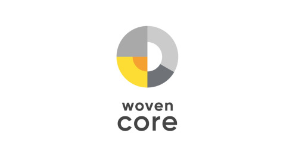
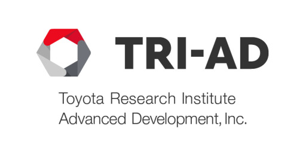
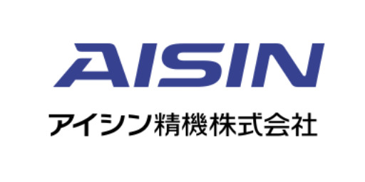

Tetsuya Ishikawa
Everything in the World is Made of Mathematics
About
- Name: Tetsuya Ishikawa (handle on the web: tiskw)
- Birthday: Jan 11, 1988
- Location: Tokyo, Japan
- Title: Mathematical engineer (see carieer below for more details)
- Skills: Machine learning, image processing, physical modeling
- Hobby: Jogging, mathematics, puzzle
- EMail <tiskw111@gmail.com>
- GitHub LinkedIn
Skills
Fundermental skills
| Probability theory, statistics, calculus | |
| Physical modeling | |
| Machine learning (including deep learning) | |
| Programming language | |
| English | |
| Agile development, scrum development |
Advanced skills
| Image processing | |
| Data analysis | |
| Signal processing | |
| Linux, Git, Docker | |
| Python, C/C++, MATLAB | |
| Tensorflow, PyTorch, Scikit-learn, Pandas |
Carieer
Jan 2022 〜 Now
Moved to Woven CORE, Inc. and angaged in the development of driver monitoring systems, and the research of machine learning and computer graphics technologies related to the driver monitoring systems development.
Jan 2020 〜 Dec 2021
Moved to Toyota Research Institute, Inc. and angaged in the research and development of image processing and deep neural network for driver monitoring systems and human modeling, and also, data analysis for factory process improvement.
Oct 2018 〜 Dec 2019
Moved to Woven Planet Holdings (former name: Toyota Research Institute Advanced Development) and engaged in the development of the driver monitoring system for vehicles using deep neural network models.
Feb 2018 〜 Sep 2018
Moved to Daiba development center, Aisin Seiki Co. Ltd. and engaged in the image processing and deep learning, especially compression of neural network model.
Apr 2012 〜 Jan 2018
Started working in Yokogawa Electric Corporation and engaged in the physical modeling and algorithm development of new types of sensors.
Apr 2010 〜 Mar 2012
Graduated Department of Mechanical and Environmental Informatics, Tokyo Institute of Technology, and have earned a Master's degree.
Apr 2006 〜 Mar 2010
Graduated Department of Control and Systems Engineering, Tokyo Institute of Technology, and have earned a Bachelor's degree.
Publications
- M. Mabuchi and T. Ishikawa, "Patch-based Privacy Preserving Neural Network for Vision Tasks", Proceedings of the IEEE/CVF Winter Conference on Applications of Computer Vision (WACV), 2023.
- T. Ishikawa and S. Stent, "Boosting Supervised Learning in Small Data Regimes with Conditional GAN Augmentation," 2022 IEEE International Conference on Image Processing (ICIP), 2022. (URL , Live ICIP Poster session )
- T. Ishikawa and T. Hayakawa, "Chaotic Behavior of the Folding Map on the Equilateral Triangle", 9th IFAC Symposium on Nonlinear Control Systems, 2013. (URL )
- T. Ishikawa and T. Hayakawa, "Analysis of Critical Phenomenon on Gossip Protocol using Back-Ultradiscretization", 9th IFAC Symposium on Nonlinear Control Systems, 2013. (URL )
- T. Ishikawa and T. Hayakawa, "Extended gossip protocol for diffusion of multiple messages and its percolation probability", 2011 50th IEEE Conference on Decision and Control and European Control Conference, 2011. (URL )
- T. Ishikawa and T. Hayakawa, "On Equivalence between Critical Probabilities of Dynamic Gossip Protocol and Static Site Percolation", SICE Journal of Control, Measurement, and System Integration, 2011. (URL )
- T. Ishikawa and T. Hayakawa, "Gossip protocol on the ad hoc networks and its approximated saturation", 49th IEEE Conference on Decision and Control (CDC), 2010. (URL )
Favorite Tools